Víctima #1 – Steven Mark Hicks
Steven Mark Hicks tenía 18 años cuando se topó con Jeffrey Dahmer. Según contó el asesino, Steven pedía aventón en la carretera para llegar a un concierto de rock el 18 de junio de 1978. Dahmer, aprovechando los deseos del joven, lo subió a su auto y lo llevó a una posición remota donde lo golpeó y estranguló hasta la muerte. Después lo desmembró y esparció sus restos en un bosque cercano. Hicks fue registrado como desaparecido ese mismo año, pero su caso se esclareció hasta que Jeffrey confesó su asesinato a principios de la década de los noventa.
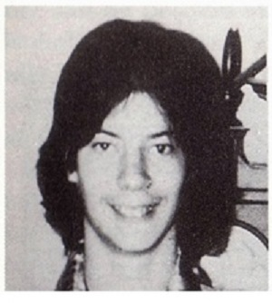
Víctima #2 – Steven Walter Tuomi
Steven Walter Tuomi, de 25 años, tuvo una cita con Dahmer en el Hotel Ambassador la noche del 20 de noviembre de 1987. A la mañana siguiente, el asesino despertó con el cuerpo inerte de su desconocido amante: había muerto por una paliza. Aunque aceptó la culpabilidad, Dahmer afirmó no recordar haberlo asesinado. Tras el descubrimiento, Jeffrey se llevó el cadáver de Steven a la casa de su abuela y lo desmembró. Los restos de Steven jamás fueron encontrados y se cree que terminaron en diversos depósitos de basura donde se descompusieron fácilmente.

Víctima #3 – James Edward Doxtator
James Edward Doxtator fue una de las víctimas más jóvenes de Jeffrey Dahmer. Con 14 años, Doxtator fue convencido de ir al departamento de su asesino tras conocerlo afuera de un bar gay de Wisconsin la noche del 16 de enero de 1988. De acuerdo con registros policiacos, Dahmer ofreció $50 dólares al joven a cambio de posar para una serie de fotografías desnudo. Ya en el apartamento, el criminal estranguló a James. A diferencia de sus primeras víctimas, Jeffrey mantuvo una semana el cuerpo de Doxtator en su sótano antes de desmembrarlo. Como sucedió con Tuomi, los restos de la víctima fueron desechados en la basura.
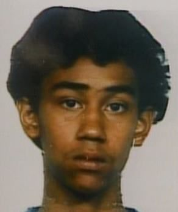
Víctima #4 – Richard Guerrero
Richard Guerrero fue otra de las parejas esporádicas de Jeffrey Dahmer que se convirtieron en una de sus víctimas. Según consta en registros policiacos, el joven de 22 años estaba en la habitación de Dahmer la noche del 24 de marzo de 1988 cuando, después de ser drogado a propósito, fue estrangulado por su anfitrión. Su cadáver fue desmembrado y disuelto en ácido durante horas. De hecho, Dahmer solo conservó el cráneo de Guerrero para mantenerlo por semanas en su sótano.
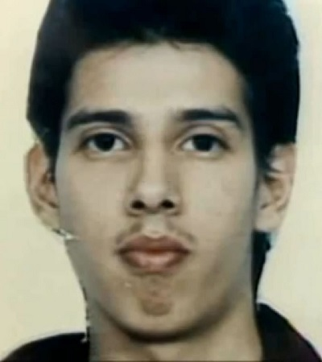
Víctima #5 – Anthony Lee Sears
La macabra tradición de conservar ciertos restos de sus víctimas fue iniciada por Jeffrey Dahmer con su quinta víctima: Anthony Lee Sears, de 24 años. El hombre acudió a la residencia de la abuela de Dahmer en lo que creía que sería una cita el 25 de marzo de 1989. Tras solo un par de horas, Lee perdió el conocimiento a causa de las drogas que Jeffrey le suministró en secreto. Una vez en el suelo, el asesino lo estranguló hasta la muerte. Su modus operandi continuó sin mayores alteraciones durante el resto de la velada: desmembró el cuerpo y comenzó a repartir sus restos en bolsas de basura. Sin embargo, en esta ocasión decidió quedarse con el cráneo y los genitales de su víctima.
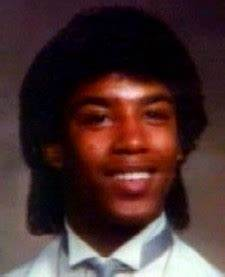
Víctima #6 – Raymond Lamont Smith
Raymond Lamont Smith, un trabajador sexual de 32 años, fue la sexta víctima de Jeffrey Dahmer y la primera de una oleada de asesinatos cometidos por el ‘Monstruo de Milwaukee’ entre 1990 y 1991. El 20 de mayo de 1990, Smith conoció a Dahmer en un bar y lo acompañó a su departamento en la calle North 25th pensando en que tendría un “encuentro comercial” más. Fue drogado, estrangulado y desmembrado esa misma noche. Como sucedió con su víctima anterior, Dahmer conservó el cráneo de Raymond.

Víctima #7 – Edward Warren Smith
Edward Warren Smith, de 27 años, fue una de las pocas víctimas con las que Dahmer tuvo una relación previa a su asesinato. De acuerdo con personas que conocían a Smith, este se había hecho amigo del criminal y lo acompañó a una fiesta el 14 de junio de 1990. Esa fue la última ocasión en la que fue visto con vida. Tras estrangularlo e intentar deshacerse de su cuerpo en ácido, Dahmer se quedó con el cráneo de Smith como un recuerdo.
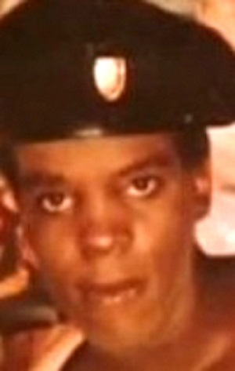
Víctima #8 – Ernest Márquez Miller
Ernest Márquez Miller, un estudiante de baile afroamericano de 22 años, conoció a Jeffrey Dahmer en una librería. El 2 de septiembre de 1990, el asesino lo invitó a su casa para pasar el rato. Una vez en su sala, Dahmer cortó el cuello de Miller y lo dejó desangrarse mientras lo movía a su bañera, donde poco después sería desmembrado. En esta ocasión, Jeffrey conservaría el esqueleto de Ernest y guardaría su corazón, bíceps y piernas en el congelador con la intención de consumirlas más adelante. Los deseos caníbales del monstruoso criminal comenzaban a aflorar.
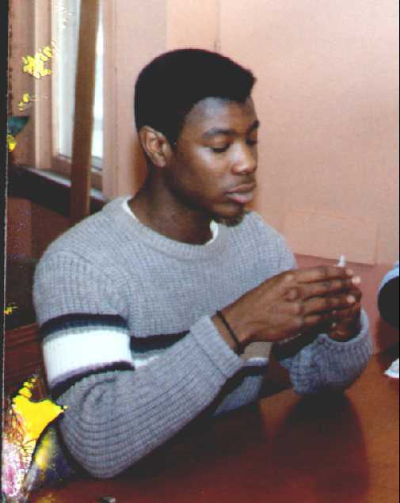
Víctima #9 – David Courtney Thomas
El 24 de septiembre de 1990, el joven David Courtney Thomas fue al departamento de Jeffrey Dahmer con la promesa de recibir un jugoso pago a cambio de posar desnudo para una serie de fotografías. Horas más tarde, después de que una bebida adulterada surtiera efecto, cayó inconsciente en el piso de Dahmer. Allí fue estrangulado y desmembrado. Durante la revisión de la casa del asesino años después se encontraron fotografías capturadas mientras Jeffrey cortaba el cuerpo de su víctima.
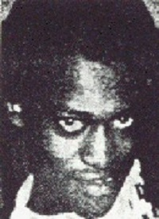
Victima #10 – Curtis Straughter
Curtis Darrell Straughter, de 17 años, esperaba un autobús cuando Jeffrey Dahmer se acercó a él. La forma en como lo convenció de acompañarlo a su departamento no ha podido ser aclarada. Lo cierto es que, durante la noche del 18 de febrero de 1991, Curtis fue asesinado con violencia en el #924 de North 25th. Como recuerdo de su crimen, Dahmer conservó el cráneo, manos y genitales del muchacho.
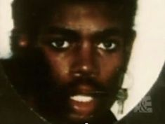
Víctima #11 – Errol Lindsay
Pero si hablamos de violencia, pocos actos se le comparan al asesinato de Errol Lindsay, un joven de 19 años que desapareció el 7 de abril de 1991. De acuerdo con reportes forenses, Jeffrey Dahmer asesinó a Lindsay después de perforar su cráneo e inyectarle ácido clorhídrico en el cerebro. Tras asfixiarlo hasta morir, el asesino serial desolló su cuerpo, guardó su piel y conservó el cráneo de su víctima. Gracias a esto último, Errol pudo ser identificado cuando la policía irrumpió en el departamento de Dahmer.

Víctima #12 – Anthony Hughes
Anthony Hughes, un hombre sordo de 31 años, fue invitado al apartamento de Jeffrey Dahmer para posar desnudo en un proyecto artístico. El 24 de mayo de 1991, Hughes fue estrangulado por Dahmer. Sin embargo, el asesino no actuó como de costumbre y, en lugar de desmembrar a su víctima, lo dejó en el suelo de su habitación por tres días. Después, se deshizo de sus restos, conservando solo el cráneo de Anthony.
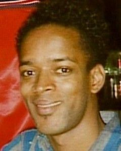
Víctima #13 – Konerak Sinthasomphone
Quizá la víctima que pudo haber acabado con las actividades criminales de Dahmer, si tan solo la policía hubiera puesto atención a su denuncia. El 27 de mayo de 1991, Konerak Sinthasomphone –de 14 años– fue encontrado notablemente fuera de sí a unas calles del departamento de Jeffrey Dahmer. Aunque las autoridades acudieron a revisar la situación, Dahmer los convenció de que el adolescente era su amante y solo estaba intoxicado. En realidad, el asesino serial había drogado a Konerak con ácido clorhídrico inyectado directamente en el cerebro. Cuando la policía dejó al chico con Dahmer, este aumentó la dosis, matándolo inmediatamente. El haber puesto en peligro su operación hizo que Dahmer fuera excesivamente violento con los restos de Sinthasomphone, al grado de conservar su cabeza en el congelador por meses.
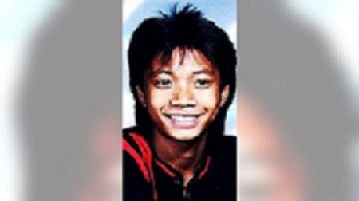
Víctima #14 – Matt Cleveland Turner
Matt Cleveland Turner, un joven de 20 años de Chicago, conoció a Jeffrey Dahmer durante la celebración del Desfile del Orgullo Gay el 30 de junio de 1991. Tras una breve plática, Dahmer convenció a Matt de acompañarlo a Milwaukee y posar para una serie de fotografías desnudo. Ya en su apartamento, Jeffrey drogó y estranguló al muchacho. También lo descuartizó, consumió sus órganos y guardó su cabeza en el congelador. Para el torso de su víctima, que también había pensado comer, Dahmer compró un tambo de plástico con capacidad de 57 galones.
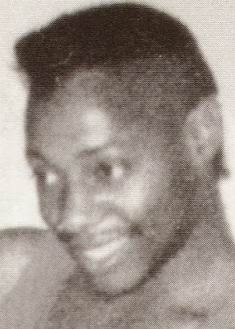
Víctima #15 – Jeremiah Benjamin Weinberger
Jeremiah Benjamin Weinberger, de 23 años, fue otra de las víctimas de Jeffrey Dahmer que llegaron a su vida en alguna de sus visitas a Chicago. El 5 de julio de 1991, cuando los restos de su presa anterior aún no se descomponían por completo, Dahmer llevó a Jeremiah a su departamento. Allí le perforó el cráneo y le inyectó agua hirviendo. Después le cortó la cabeza –que conservó en su refrigerador– y desolló el cuerpo antes de desmembrarlo. Su torso fue encontrado junto al de Matt en el tambo de plástico.
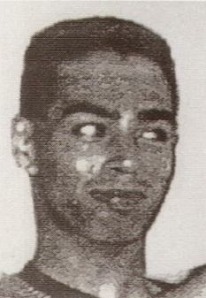
Víctima #16 – Oliver Joseph Lacy
Oliver Joseph Lacy, de 24 años, acudió al departamento de Jeffrey Dahmer con la promesa de un pago a cambio de posar desnudo para unas fotografías. Al igual que otras víctimas fue drogado y estrangulado hasta la muerte. En la noche del 15 de julio de 1991, el cuerpo de Lacy fue desmembrado sin piedad. Su cabeza y corazón fueron puestos para conservarse en el refrigerador, mientras que el resto de su esqueleto fue guardado por Dahmer para un altar que tenía en mente realizar con los restos de sus otras víctimas.

Víctima #17 – Joseph Arthur Bradehoft
Joseph Arthur Bradehoft, de 25 años, se mudó a Milwaukee para encontrar un trabajo que le permitiera mantener a sus tres hijos. Se cree que Dahmer le ofreció dinero a cambio de posar desnudo. El 19 de julio de 1991, Joseph fue asfixiado en la recámara del asesino, quien finalmente lo decapitó y desmembró dos días después. Su cabeza fue encontrada por la policía en el refrigerador, mientras que su torso fue hallado en el tambo de plástico comprado por Dahmer solo unas semanas antes.